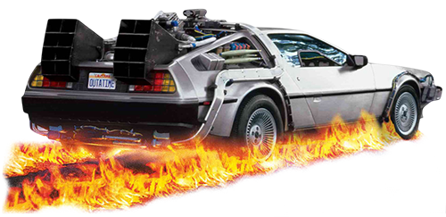
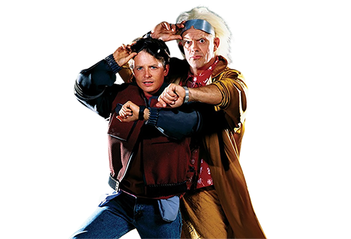

SINOPSIS
La trilogía Back to the Future sigue las aventuras de Marty McFly, un adolescente que viaja en el tiempo gracias a un DeLorean modificado por el excéntrico científico Doc Brown. En la primera película, Marty accidentalmente viaja a 1955 y debe asegurarse de que sus padres se conozcan para no desaparecer. En la segunda, exploran el futuro (2015) y un presente alternativo, mientras que en la tercera viajan al Viejo Oeste (1885) para salvar a Doc. La saga mezcla ciencia ficción, comedia y aventura, abordando las consecuencias de alterar el tiempo.
 